Studio tattoo
Seu corpo é uma tela
Eu sou o artista
Welcome to tatoo
Arte na pele
Bem-vindo ao meu mundo onde a criatividade encontra a pele. Aqui, transformo suas ideias em obras de arte vivas e duradouras. Sou um tatuador apaixonado e experiente e quero te ajudar na criação de designs personalizados que expressam sua individualidade, história e estilo de vida. Sinta-se à vontade para explorar meu portfólio e entrar em contato para marcar sua consulta. Seu próximo grande trabalho está a apenas um clique de distância. Deixe-me fazer parte da sua jornada de expressão e arte corporal. Juntos, vamos criar algo espetacular!
Trabalhos
Old school
É um dos estilos de tatuagem mais conhecidos e antigos que existem. Ele teve sua origem em torno da década de 50, é uma homenagem à cultura vintage, trazendo desenhos de ícones da época. Visualmente, os desenhos possuem cores vivas, mas uma paleta de cor seletiva, com traços mais grosseiros, retos e definidos.
Black work
O blackwork, como o nome já sugere, é um trabalho de tatuagem onde é usado somente uma cor de tinta, o preto. Com uma grande concentração do pigmento e desenhos majoritariamente obscuros e sólidos, o blackwork é um dos estilos de tatuagem que mais cresce com o passar dos anos, conquistando admirados e adeptos ao redor do mundo.
Pontilhismo
Outro estilo bem antigo e amado é o pontilhismo. Criado na França no século 19, a técnica é conhecida originalmente como dotwork - vulgo, trabalho com pontos. Ele consiste na construção dos desenhos a partir de pequenos pontos e o cuidado com detalhes é o principal fator nas tatuagens de pontilhismo.
Minimalista
Um dos estilos de tatuagem que mais virou tendência nos últimos anos foi o minimalista. O mood do menos é mais cresceu em absolutamente todos os mercados e segmentos, como na moda, no design, na decor e claro, na tatuagem.
 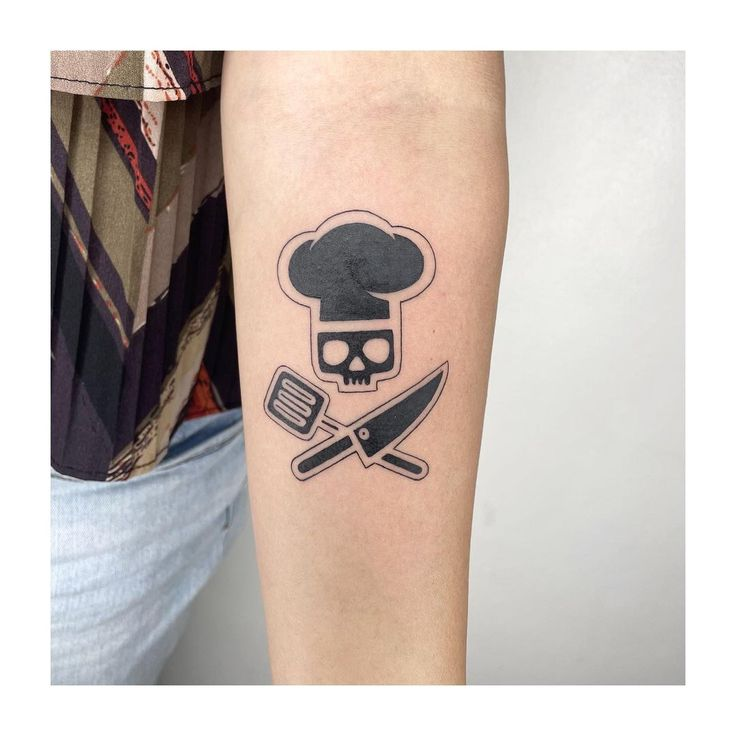
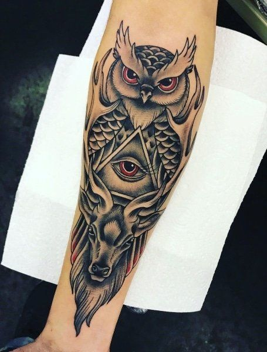
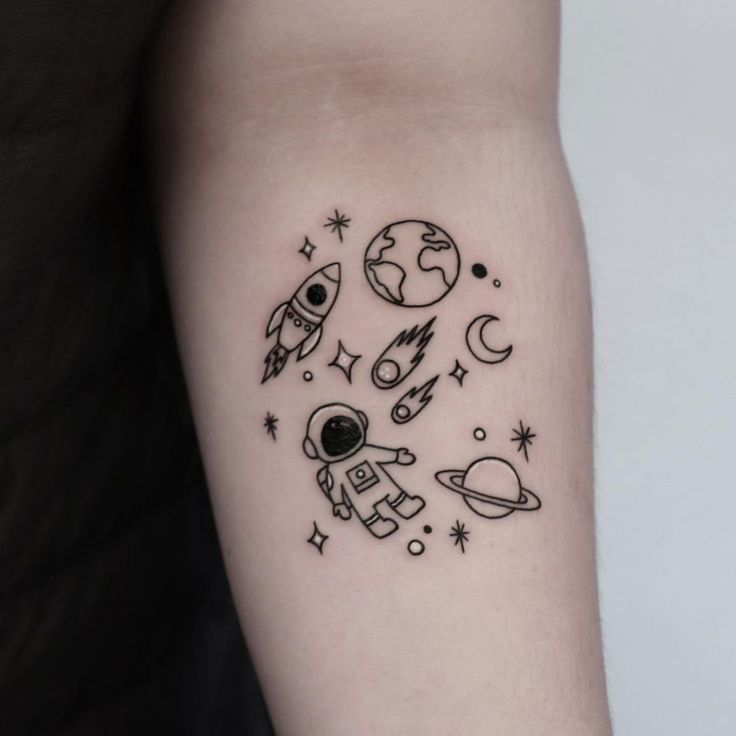
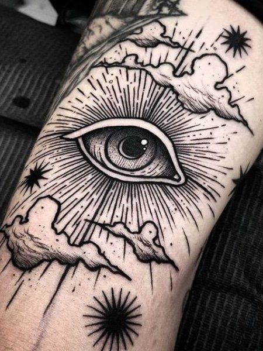
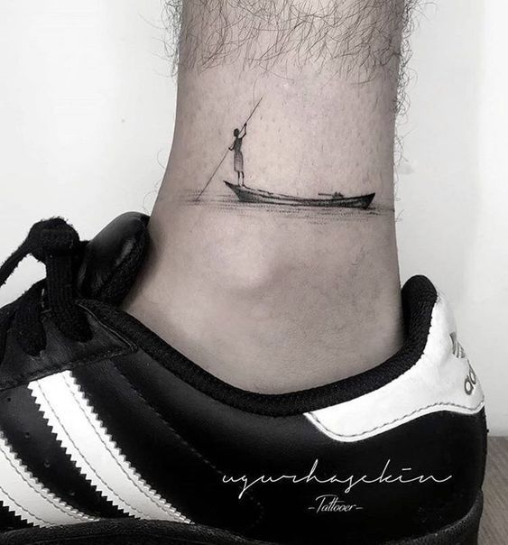
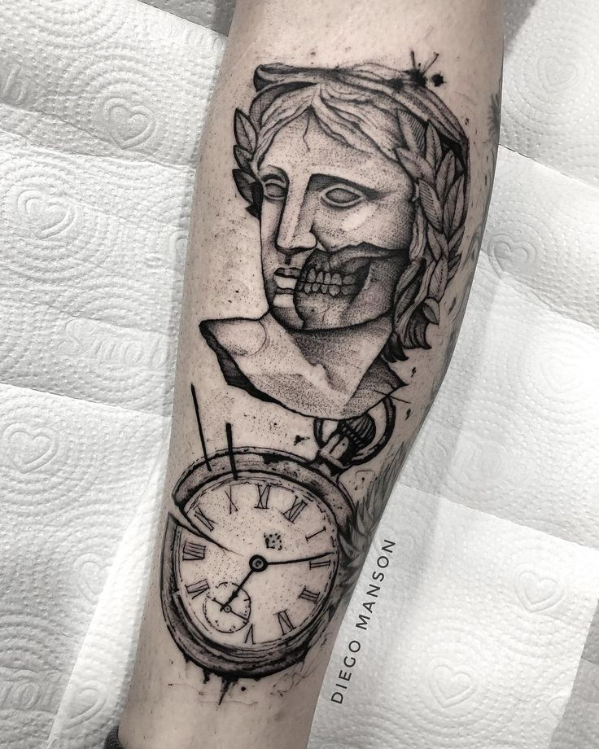
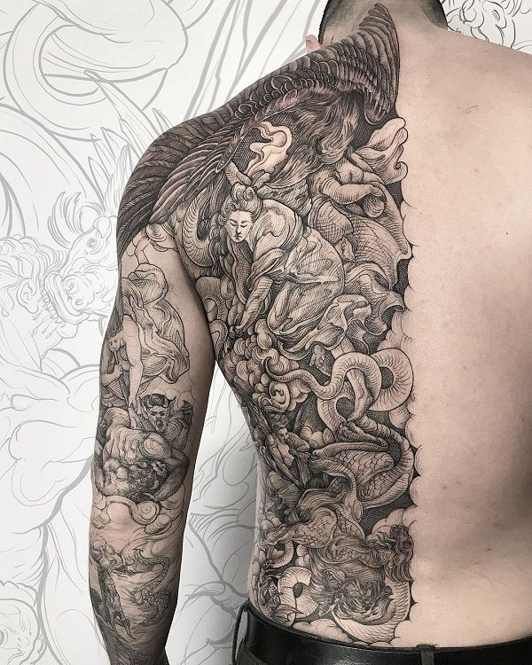
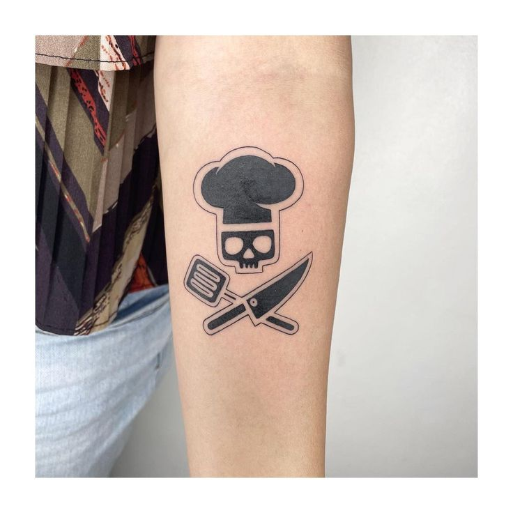
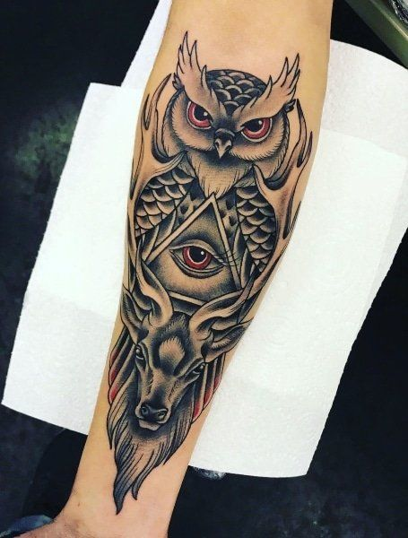
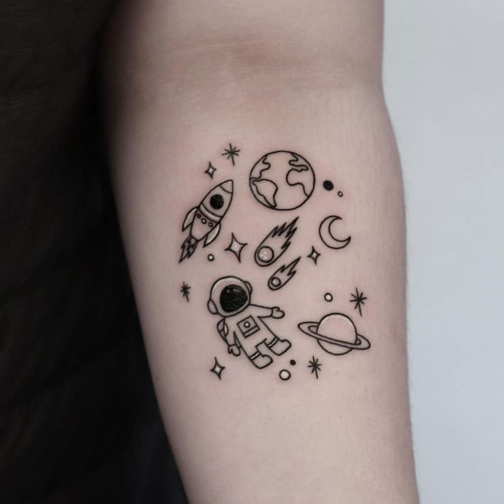
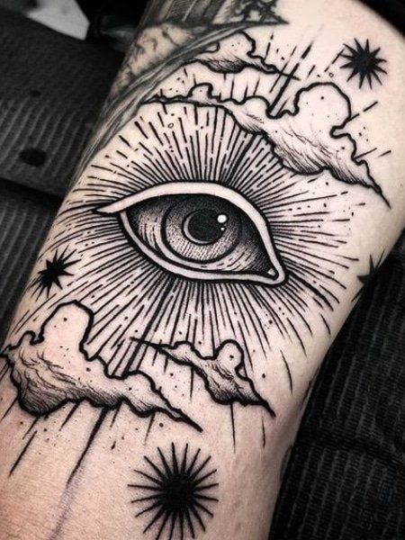
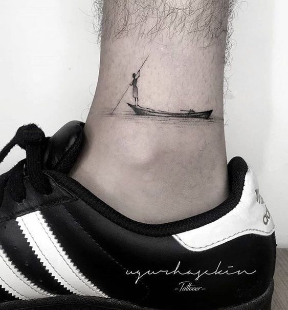
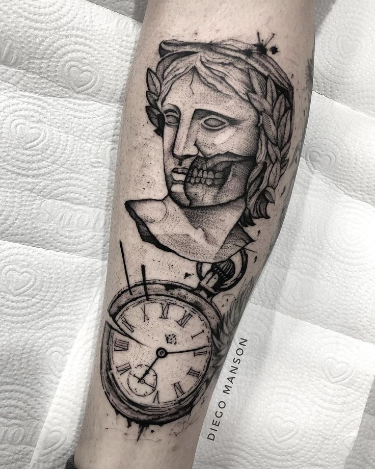
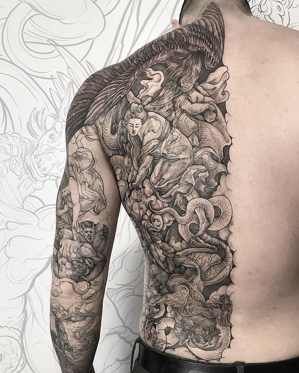
Desenvolvido por Jacson Polonha 2023